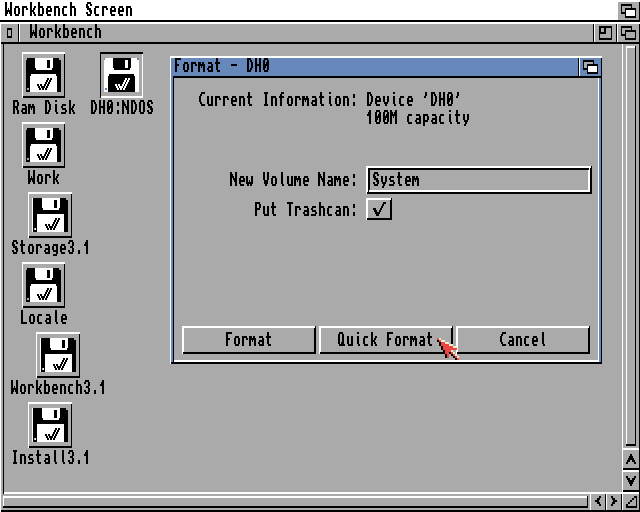
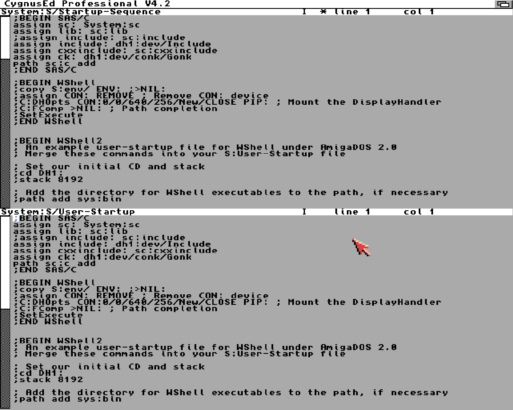

Workbench Setup
This will install Workbench 3.1, the last official that Conk was built on.
From WinUAE
Hardware
- Floppy Drives
- DF0: amiga-os-310-install.adf { .\AmigaForever\Amiga Files\Shared\adf\ }
- DF1: amiga-os-310-workbench.adf { .\AmigaForever\Amiga Files\Shared\adf\ }
- DF2: amiga-os-310-locale.adf { .\AmigaForever\Amiga Files\Shared\adf\ }
- DF3: amiga-os-310-storage.adf { .\AmigaForever\Amiga Files\Shared\adf\ }
- Floppy Drive Emulation Speed: Move all the way to the left (Turbo)
-  - Start
- Start
This will boot to Workbench.
Format DH0 (System)
- Select DH0:NDOS
- Right-Click > Icons > Format Disk...
- New Volume Name: System
- Quick Format

- Select Format & Format again on the confirmation boxes
- OK on the PFS confirmation box
Install Workbench 3.1
- Open Install3.1:Install/English
- Proceed
- Install Release 3.1
- Select Intermediate User
- Proceed With Install
- Install Options: Proceed
- Do you want Release 3.1 isntall in the "System:" partition? - Yes
- English - Proceed
- Printers - Proceed
- Keymap - American
When prompted for "Amiga Extras" - Press F12 to open WinUAE - Change Floppy Disks - DF1: amiga-os-310-extras.adf { .\AmigaForever\Amiga Files\Shared\adf\ } - DF2: amiga-os-310-fonts.adf { .\AmigaForever\Amiga Files\Shared\adf\ } - OK - Install should continue - When install complete - Press F12 to open WinUAE - Eject all floppy disks - OK - Proceed to reboot
It should now reboot into Workbench from the DH0
Display
Right-click Workbench - Workbench Menu > Select Backdrop - Window Menu > Snapshot > All
Multiscan monitor setup - Copy Storage/Monitors/Multiscan in to Devs/Monitors - Reset
System > Prefs > Screen Mode - MULTISCAN:Productivity (640x480) - 32 Colors - Save
WinUAE > Host
- Display
- Windowed 1300 x 960 (If you're running 1440p or above)
- Filter
- Horiz Size 2x
- Vert Size 2x
- Adjust Horiz poisition to fix on in window.
Correct Work: Icon - System:Tools/IconEdit - Drag in System Icon - Save As Work:disk.info
Boost CPU
We can now boost the CPU
- F12 to open WinUAE
- CPU and FPU
- CPU: 68040
- JIT
- MMU: None
- FPU: CPU Internal
- CPU Emulation Speed: Fastest Possible
- Advanced JIT Settings
- Cache Size: 16 MB
- Constant jump
- No flags
- Direct
- Catch unexpected exceptions
-  - Configurations
- Save
- Reset
- Configurations
- Save
- Reset
Click to Front
System > Tools > Commodities - Select ClickToFront - Icons Menu > Copy - Drag Copy_of_ClickToFront to System:WBStartup - Icons Menu > Rename > ClickToFront - Icons Menu > Information - Change QUALIFIER=LEFT_ALT to QUALIFIER=NONE > SAVE - Reboot (Insert + Home + Ctrl) - You can now double-click a window to bring to the front.
CygnusEd (CED) Install

- Open Work Drive > Windows Menu > New Drawer > "Tools" > OK - https://archive.org/download/CommodoreAmigaApplicationsADF - Download - CygnusEd Professional v4.2 (1997)CygnusEd Professional v4.2 (1997)(ASDG)[WB].zip - Installer v43.3 (1996)(Amiga International).zip - Extract both Zip files - Install Installer - Mount Installer adf into DF0: - Workbench Menu > Execute Command > NewShell -copy df0:installer c:
- Install CygnusEd (CED)
- Mount CygnusEd adf into DF0:
- Open Disk > Install_CygnusEd
- Intermediate User > Proceed
- Proceed
- Select Work:Tools > Proceed
- No - existing installation
- No - special verson
- Proceed (finish install)
- Eject DF0
- Replace "ed" with "ced"
- Workbench Menu > Execute Command
- ced S:User-Startup
- Add alias ed Work:Tools/CygnusEd/Ed to the CygnusEd section
- Reset (Insert + Home + Ctrl)
- Executing "ed" should now start "ced"
WShell (NewWSH) Install
[!NOTE] Not working yet. To be sorted later.
WShell Install Copy WShell-Install folder to RAM: New NewShell cd RAM:WShell-Install execute install-wshell You can open NewWsh to open WShell ed s:WShell-Startup prompt “%c> “